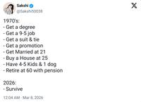

sziring shares a report from Business Insider: Silicon Valley has long competed for talent with ever-richer pay packages built around salary, bonus, and equity. Now, a fourth line item is creeping into the mix: AI inference. As generative AI tools become embedded in software development, the cost of running the underlying models -- known as inference -- is emerging as a productivity driver and a budget line that finance chiefs can't ignore.
Software engineers and AI researchers inside tech companies have already been jousting for access to GPUs, with this AI compute capacity being carefully parceled out based on which projects are most important. Now, some tech job candidates have begun asking about what AI compute budget they will have access to if they decide to join.
"I am increasingly asked during candidate interviews how much dedicated inference compute they will have to build with Codex," Thibault Sottiaux, engineering lead at OpenAI's Codex, the startup's AI coding service, wrote on X recently. He added that usage per user is growing much faster than overall user growth, a sign that AI compute is becoming even scarcer and more valuable. That scarcity is reshaping how engineers think about their work and pay. "The inference compute available to you is increasingly going to drive overall software productivity," said OpenAI President Greg Brockman.
The report cites a recent compensation submission from a software engineer that listed "Copilot subscription" as part of the pay and benefits. "OpenAI and Anthropic should create recruitment sites where their clients can advertise roles, listing the token budget for the job alongside the salary range," said Peter Gostev, AI capability lead at Arena, a startup that measures the performance of models.
Tomasz Tunguz of Theory Ventures predicts AI inference will be the fourth component of engineering compensation, alongside salary, bonus, and equity. "Will you be paid in tokens? In 2026, you likely will start to be," Tunguz said.
Read more of this story at Slashdot.
AT&T plans to invest more than $250 billion over the next five years to expand U.S. telecom infrastructure for the AI age. The company says it will also hire thousands of technicians while partnering with AST SpaceMobile to extend coverage to remote areas. Reuters reports: Rapid adoption of artificial intelligence, cloud computing and connected devices has prompted telecom operators to invest heavily in fiber and 5G networks as they also seek to fend off intensifying competition from cable broadband providers. AT&T, which has about 110,000 employees in the U.S., said the new hires will help build and maintain its infrastructure. The outlay includes capital expenditure and other spending, the company said.
The spending will focus on expanding its fiber and wireless networks, including accelerating deployment of fiber broadband, 5G home internet and satellite connectivity to extend coverage across urban, suburban and rural areas. [...] AT&T is also working with satellite partner AST SpaceMobile to expand connectivity to remote regions where traditional network infrastructure is difficult to deploy. The company said it would continue spending on the FirstNet network built for first responders and bolster investment in network security and artificial intelligence-driven threat detection.
Read more of this story at Slashdot.
Since 1999, Slashdot has been covering the annual Ig Nobel prize ceremonies -- which honor real scientific research into strange or surprising subjects. "After 35 years in Boston, the annual prize ceremony will take place in Zurich, Switzerland, this year and will continue to be held in a European city for the foreseeable future," reports Ars Technica. "The reason: concerns about the safety of international travelers, who are increasingly reluctant to travel to the U.S. to participate."
"During the past year, it has become unsafe for our guests to visit the country," Marc Abrahams, master of ceremonies and editor of The Annals of Improbable Research magazine, told The Associated Press. "We cannot in good conscience ask the new winners, or the international journalists who cover the event, to travel to the U.S. this year." It comes on the heels of our recent story that many international game developers are opting to skip this year's weeklong Game Developers Conference in San Francisco, citing similar concerns. Ars Technica reports: Established in 1991, the Ig Nobels are a good-natured parody of the Nobel Prizes; they honor "achievements that first make people laugh and then make them think." As the motto implies, the research being honored might seem ridiculous at first glance, but that doesn't mean it's devoid of scientific merit. The unapologetically campy awards ceremony features miniature operas, scientific demos, and the 24/7 lectures, in which experts must explain their work twice: once in 24 seconds and again in just seven words.
Traditionally, the awards ceremony and related Ig Nobel events have taken place in Boston at Harvard University, Massachusetts Institute of Technology, and Boston University. However, four of last year's 10 winners opted to skip the ceremony rather than travel to the U.S., and the situation has not improved. [...] [T]his year, the Ig Nobel organizers are joining forces with the ETH Domain and the University of Zurich for hosting duties. "Switzerland has nurtured many unexpected good things -- Albert Einstein's physics, the world economy, and the cuckoo clock leap to mind -- and is again helping the world appreciate improbable people and ideas," Abraham said.
The Ig Nobels will not be returning to the U.S. any time soon. Instead, the plan is for Zurich to host every second year; every odd-numbered year, the ceremony will be hosted by a different European city. Abraham likened the arrangement to the Eurovision Song Contest.
Read more of this story at Slashdot.
OpenAI is reportedly backing away from expanding its AI data center partnership with Oracle because newer generations of Nvidia GPUs may arrive before the facility is even operational. CNBC reports: Artificial intelligence chips are getting upgraded more quickly than data centers can be built, a market reality that exposes a key risk to the AI trade and Oracle's debt-fueled expansion. OpenAI is no longer planning to expand its partnership with Oracle in Abilene, Texas, home to the Stargate data center, because it wants clusters with newer generations of Nvidia graphics processing units, according to a person familiar with the matter.
The current Abilene site is expected to use Nvidia's Blackwell processors, and the power isn't projected to come online for a year. By then, OpenAI is hoping to have expanded access to Nvidia's next-generation chips in bigger clusters elsewhere, said the person, who asked not to be named due to confidentiality. In a post on X, Oracle called the reports "false and incorrect." However, it only said existing projects are on track and didn't address expansion plans.
CNBC notes: "Oracle secured the site, ordered the hardware, and spent billions of dollars on construction and staff, with the expectation of going bigger."
Read more of this story at Slashdot.
An anonymous reader quotes a report from Ars Technica: This week, tens of thousands of game developers and producers will once again gather in San Francisco, as they have since 1988, for the weeklong Game Developers Conference. But this year's show will be missing many international developers who say they no longer feel comfortable traveling to the United States to attend, no matter how relevant the show is to their work and careers. Dozens of those developers who spoke to Ars in recent months say they're wary of traveling to a country that has shown a callous disregard for -- or outright hostility toward -- the safety of international travelers. That's especially true for developers from various minority groups, those with transgender identities, and those who feel they could be targeted for outspoken political beliefs. "I honestly don't know anyone who is not from the U.S. who is planning on going to the next GDC," Godot Foundation Executive Director Emilio Coppola, who's based in Spain, told Ars. "We never felt super safe, but now we are not willing to risk it." "I honestly don't know anyone who is not from the U.S. who is planning on going to the next GDC," says Godot Foundation Executive Director Emilio Coppola, who's based in Spain. "We never felt super safe, but now we are not willing to risk it."
"Hearing European citizens getting arrested by border control over their views on the U.S. is not something I would like to test for myself," adds Nazih Fares, a French-Lebanese citizen and creative director at indie studio Le Cabinet du Savoir..
Many of the developers who spoke to Ars cite the intrusive questioning, racial profiling, and other horror stories reported at the U.S. border. "I read a few long reads about how UK/German tourists ended up detained, and that was the final straw for me," Austrian-based Cohop Game founder Eline Muijres said. "It doesn't feel safe for me."
Domini Gee, a Canadian game writer and narrative designer echoed that concern, adding: "There's no shortage of stories... about the risk of detainment, deportation, phones being searched... the consequences if I'm not [OK] could be high."
Read more of this story at Slashdot.
An anonymous reader quotes a report from Heise: Pay securely with an Android smartphone, completely without Google services: This is the plan being developed by the newly founded industry consortium led by the German Volla Systeme GmbH. It is an open-source alternative to Google Play Integrity. This proprietary interface decides on Android smartphones with Google Play services whether banking, government, or wallet apps are allowed to run on a smartphone.
Obstacles and tips for paying with an Android smartphone without official Google services have been highlighted by c't in a comprehensive article. The European industry consortium now wants to address some problems mentioned. To this end, the group, which includes Murena, which develops the hardened custom ROM /e/OS, Iode from France, and Apostrophy (Dot) from Switzerland, in addition to Volla, is developing a so-called "UnifiedAttestation" for Google-free mobile operating systems, primarily based on the Android Open-Source Project (AOSP).
According to Volla, a European manufacturer and a leading manufacturer from Asia, as well as European foundations such as the German UBports Foundation, have also expressed interest in supporting it. Furthermore, developers and publishers of government apps from Scandinavia are examining the use of the new procedure as "first movers." In its announcement, Volla explains that Google provides app developers with an interface called Play Integrity, which checks whether an app is running on a device with specific security requirements. This primarily affects applications from "sensitive areas such as identity verification, banking, or digital wallets -- including apps from governments and public administrations".
The company criticizes that the certification is exclusively offered for Google's own proprietary "Stock Android" but not for Android versions without Google services, such as /e/OS or similar custom ROMs. "Since this is closely intertwined with Google services and Google data centers, a structural dependency arises -- and for alternative operating systems, a de facto exclusion criterion," the company states. From the consortium's perspective, this also leads to a "security paradox," because "the check of trustworthiness is carried out by precisely that entity whose ecosystem is to be avoided at the same time". The UnifiedAttestation system is built around three main components: an "operating system service" that apps can call to check whether the device's OS meets required security standards, a decentralized validation service that verifies the OS certificate on a device without relying on a single central authority, and an open test suite used to evaluate and certify that a particular operating system works securely on a specific device model.
"We don't want to centralize trust, but organize it transparently and publicly verifiable. When companies check competitors' products, we can strengthen that trust," says Dr. Jorg Wurzer, CEO of Volla Systeme GmbH and initiator of the consortium. The goal is to increase digital sovereignty and break free from the control of any one, single U.S. company, he says.
Read more of this story at Slashdot.
Electronic Arts has laid off staff across multiple Battlefield studios despite Battlefield 6 being the best-selling game in the U.S. in 2025 and the "biggest launch in franchise history." According to IGN, the layoffs include workers at Criterion, Dice, Ripple Effect, and Motive Studios. From the report: Individuals are being informed that the layoffs are taking place as part of a "realignment" across the Battlefield studios, as the team continues its ongoing, live service support for Battlefield 6 following launch. All four studios will remain operational, though the layoffs seem to be impacting a variety of teams across multiple studios and offices.
IGN asked EA for comment on total number and types of roles impacted, as well as for the specific reasons for the layoffs. An EA spokesperson told IGN: "We've made select changes within our Battlefield organization to better align our teams around what matters most to our community. Battlefield remains one of our biggest priorities, and we're continuing to invest in the franchise, guided by player feedback and insights from Battlefield Labs."
Read more of this story at Slashdot.
Live Nation reached a settlement with the U.S. Department of Justice that avoids breaking up its dominant live events empire with Ticketmaster. Instead, the deal requires changes like "open sourcing" their ticketing model and divesting some venues. NBC News reports: The company and the Justice Department reached a settlement on Monday, following a week of testimony during an antitrust trial that threatened to potentially separate the world's largest live entertainment company. [...] On a background call with reporters Monday, a senior justice official said the deal will drive down prices by giving both artists and consumers more choice.
As part of the agreement, Ticketmaster will provide a standalone ticketing system that will allow third-party companies like SeatGeek and StubHub to offer primary tickets through the platform. The senior justice official described it as "open sourcing" their ticketing model. The company will also divest up to 13 amphitheaters and reserve 50% of tickets for nonexclusive venues. Ticketmaster is also prohibited from retaliating against a venue that selects another primary ticket distributor, among other requirements. Although a group of states have joined the DOJ in signing the agreement, other states can continue to press their own claims.
Read more of this story at Slashdot.
An anonymous reader quotes a report from The Register: AI can reverse engineer machine code and find vulnerabilities in ancient legacy architectures, says Microsoft Azure CTO Mark Russinovich, who used his own Apple II code from 40 years ago as an example. Russinovich wrote: "We are entering an era of automated, AI-accelerated vulnerability discovery that will be leveraged by both defenders and attackers."
In May 1986, Russinovich wrote a utility called Enhancer for the Apple II personal computer. The utility, written in 6502 machine language, added the ability to use a variable or BASIC expression for the destination of a GOTO, GOSUB, or RESTORE command, whereas without modification Applesoft BASIC would only accept a line number. Russinovich had Claude Opus 4.6, released early last month, look over the code. It decompiled the machine language and found several security issues, including a case of "silent incorrect behavior" where, if the destination line was not found, the program would set the pointer to the following line or past the end of the program, instead of reporting an error. The fix would be to check the carry flag, which is set if the line is not found, and branch to an error.
The existence of the vulnerability in Apple II type-in code has only amusement value, but the ability of AI to decompile embedded code and find vulnerabilities is a concern. "Billions of legacy microcontrollers exist globally, many likely running fragile or poorly audited firmware like this," said one comment to Russinovich's post.
Read more of this story at Slashdot.
Axios reports that Meta has acquired Moltbook, the viral, Reddit-like social network designed for AI agents. Humans are welcome, but only to observe. Axios reports: The deal brings Moltbook's creators -- Matt Schlicht and Ben Parr -- into Meta Superintelligence Labs (MSL), the unit run by former Scale AI CEO Alexandr Wang. Meta did not disclose Moltbook's purchase price. The deal is expected to close mid-March, Meta says, with the pair starting at MSL on March 16. When it launched in late January, Moltbook was labeled the "most interesting place on the internet" by open-source developer and writer Simon Willison. "Browsing around Moltbook is so much fun. A lot of it is the expected science fiction slop, with agents pondering consciousness and identity. There's also a ton of genuinely useful information, especially on m/todayilearned."
In an internal post seen by Axios, Meta's Vishal Shah said existing Moltbook customers can temporarily continue using the platform. "The Moltbook team has given agents a way to verify their identity and connect with one another on their human's behalf," Shah says. "This establishes a registry where agents are verified and tethered to human owners." He added: "Their team has unlocked new ways for agents to interact, share content, and coordinate complex tasks."
Read more of this story at Slashdot.
German publishers and advertising groups are urging regulators to fine Apple over its App Tracking Transparency (ATT) system, arguing it unfairly restricts access to advertising data while allowing Apple to remain the central gatekeeper -- without subjecting its own apps to the same restrictions. If Germany's antitrust authority does rule against Apple, the company could face fines of up to 10% of its global revenue. 9to5Mac reports: One of the countries investigating whether ATT is anticompetitive is Germany. Last year, in an attempt to appease the country's antitrust watchdog, the company proposed several changes to the framework's rules. From Reuters' original coverage of Apple's changes proposals: "Apple had agreed to introduce neutral consent prompts for both its own services and third-party apps, and to largely align the wording, content and visual design of these messages, said Andreas Mundt, head of Germany's Bundeskartellamt. The company also proposed simplifying the consent process so developers can obtain user permission for advertising-related data processing in a way that complies with data protection law." [...] At the time, German regulators launched a consultation with industry publications to determine whether the proposals addressed their concerns. As it turns out, the answer was a hard no.
As Reuters reported today: "Apple's proposed changes to its app tracking rules do not resolve antitrust issues in the mobile advertising market, associations representing German publishers and advertisers said on Tuesday as they urged the country's antitrust authority to slap a fine on the U.S. tech giant. [...] 'The proposed commitments would not change the negative effects of the App Tracking Transparency Framework,' Bernd Nauen, chief executive of the German Advertising Federation, said in a joint letter signed by the trade bodies. 'Apple would remain the data gatekeeper and would continue to decide who gets access to advertising-relevant data and how companies can communicate with their end customers,' he said."
Read more of this story at Slashdot.
The FBI is investigating a breach affecting systems tied to wiretapping and surveillance warrant data, after abnormal logs revealed possible unauthorized access to law-enforcement-sensitive information. "The FBI identified and addressed suspicious activities on FBI networks, and we have leveraged all technical capabilities to respond," a spokesperson for the bureau said. "We have nothing additional to provide." The Register reports: [W]hile the FBI declined to provide any additional information, it's worth noting that China's Salt Typhoon previously compromised wiretapping systems used by law enforcement. Salt Typhoon is the PRC-backed crew that famously hacked major US telecommunications firms and stole information belonging to nearly every American.
According to the Associated Press, the FBI notified Congress that it began investigating the breach on February 17 after spotting abnormal log information related to a system on its network. "The affected system is unclassified and contains law enforcement sensitive information, including returns from legal process, such as pen register and trap and trace surveillance returns, and personally identifiable information pertaining to subjects of FBI investigations," the notification said.
Read more of this story at Slashdot.
Samsung says it's thinking about bringing "vibe coding" to future Galaxy phones, allowing users to describe apps or interface changes in plain language and have AI generate the code. TechRadar interviewed Won-Joon Choi, Samsung's head of mobile experience, to learn more about the plans. Here's an excerpt from their report: As noted by Won-Joon Choi, the usefulness of vibe coding on smartphones is that it opens up the "possibility of customizing your smartphone experience in new ways, not just your apps but your UX." He added, "Right now we're limited to premade tools, but with vibe coding, users could adjust their favorite apps or make something customized to their needs. So vibe coding is very interesting, and something we're looking into." [...]
Samsung recently debuted the Galaxy S26 series of phones and made a point to not call them smartphones -- they're "AI phones" now. This certainly rang true with the majority of upgrades to the devices being AI software-focused, like the new Now Nudge and expanded Audio Eraser tools, with the biggest hardware bump for the base models coming via the 39% improved NPU processing (the processor in charge of on-device AI tasks). It also teased the debut of Perplexity on its phones, joining as an alternative to the Gemini assistant, and teased the possibility of other AI models getting the same treatment in the future.
Read more of this story at Slashdot.
Private equity firm EQT AB is reportedly exploring a sale of SUSE that could value the open-source Linux pioneer at up to $6 billion, roughly doubling the valuation since EQT took the company private in 2023. Reuters reports: EQT "has hired investment bank Arma Partners to sound out a group of private equity investors for a possible sale of the company, said the sources, who requested anonymity to discuss confidential matters. The deliberations are at "an early stage and there is no certainty that EQT will proceed with "a transaction, the sources said. [...] The potential deal comes amid a broader selloff in software stocks, which has disrupted mergers and acquisitions activity. Investors are "concerned that new artificial intelligence tools could displace many existing software products, weighing on technology "valuations and making deals harder to price.
Some investors, however, see Luxembourg-headquartered SUSE as a potential beneficiary of AI adoption, arguing that demand for enterprise-grade infrastructure software is likely to grow as companies build and deploy more AI applications. The company generates about $800 million in revenue and more than $250 million in earnings before interest, taxes, depreciation, and amortization (EBITDA) and could fetch between $4 billion and $6 billion in a sale, the sources said.
Read more of this story at Slashdot.
A startup called Reflect Orbital wants to launch thousands of mirror-bearing satellites to reflect sunlight onto Earth at night and "power solar farms after sunset, provide lighting for rescue workers and illuminate city streets, among other things," reports the New York Times. From the report: It is an idea seemingly out of a sci-fi movie, but the company, Reflect Orbital of Hawthorne, Calif., could soon receive permission to launch its first prototype satellite with a 60-foot-wide mirror. The company has applied to the Federal Communications Commission, which issues the licenses needed to deploy satellites. If the F.C.C. approves, the test satellite could get a ride into orbit as soon as this summer. The F.C.C.'s public comment period on the application closes on Monday. "We're trying to build something that could replace fossil fuels and really power everything," Ben Nowack, Reflect Orbital's chief executive, said in an interview. The company has raised more than $28 million from investors.
[...] Reflect Orbital's first prototype, which will be roughly the size of a dorm fridge, is almost complete. Once in space, about 400 miles up, the test satellite would unfurl a square mirror nearly 60 feet wide. That would bounce sunlight to illuminate a circular patch about three miles wide on the Earth's surface. Someone looking up would see a dot in the sky about as bright as a full moon. Two more prototypes could follow within a year. By the end of 2028, Reflect Orbital hopes to launch 1,000 larger satellites, and 5,000 of them by 2030. The largest mirrors are planned to be nearly 180 feet wide, reflecting as much light as 100 full moons. The company said its goal was to deploy the full constellation of 50,000 satellites by 2035.
How much does it cost to order sunlight at night? Mr. Nowack said the company would charge about $5,000 an hour for the light of one mirror if a customer signed an annual contract for 1,000 hours or more. Lighting for one-time events and emergencies, which might require numerous satellites and more effort to coordinate, would be more expensive. For solar farms, he envisions splitting revenue from the electricity generated by the additional hours of light.
Read more of this story at Slashdot.
Ashley Capoot / CNBC : Filing: Microsoft files an amicus brief in support of Anthropic and advocates for a temporary restraining order to block the DOD's supply chain risk designation — Microsoft threw its support behind Anthropic on Tuesday and advocated for a temporary restraining order that would block …
Aisha Malik / TechCrunch : Amazon expands its healthcare AI assistant Health AI to its website and app; it was previously only available on the app for One Medical — Amazon announced on Tuesday that it's expanding access to its healthcare AI assistant to its website and app. The assistant, called Health AI …
Natasha Mascarenhas / Bloomberg : Sources: General Catalyst is in talks with investors to raise about $10B; it raised $8B in capital in 2024 and had more than $40B in AUM as of last summer — General Catalyst, a venture capital firm that has recently transformed into a broader financial services company …
Catherina Gioino / Fortune : Nitra, which offers a platform powered by AI agents to manage medical practices, raised a $50M Series B, bringing its total funding to $205M — Tim Hwang has spent his career moving between politics, policy, and startups. He worked on Barack Obama's 2008 presidential campaign …
Jordan Novet / CNBC : Oracle reports Q3 revenue up 22% YoY to $17.19B, vs. $16.91B est., and cloud revenue up 44% to $8.9B, vs. $8.85B est.; ORCL jumps 8%+ after hours — Oracle shares rose 8% in extended trading on Tuesday after the software vendor reported quarterly results that surpassed Wall Street projections …
Alex Weprin / The Hollywood Reporter : MoffettNathanson: YouTube became the world's largest media company in 2025 with an estimated $62B in revenue, passing $60.9B earned by Disney's media business — The influential financial research firm MoffettNathanson suggests that the Google-owned video platform passed Disney's media business in 2025.
Washington Post : Sources: US Social Security's inspector general is investigating claims an ex-DOGE engineer took sensitive data on a thumb drive to his new private employer — The Social Security inspector general's office is investigating allegations that the former DOGE engineer took sensitive data …
Sara Fischer / Axios : Nielsen's Gracenote sues OpenAI for copyright infringement, saying OpenAI copied Gracenote's data and relational framework used to connect metadata — - To date, there hasn't been a major media copyright lawsuit that focuses on the theft of a proprietary sequence or structure behind a dataset.
Ivan Mehta / TechCrunch : Sandbar, which is developing the Stream Ring, a $249+ AI-powered wearable that transcribes audio notes, raised a $23M Series A, bringing total funding to $36M — Sandbar, a startup by former Meta employees Mina Fahmi and Kirak Hong, attracted much attention last year when it showed off its note-taking wearable, the Stream ring.
CJ Fairfield / CRN : Slide, which develops data backup and disaster recovery tech for managed service providers, raised a $70M Series B led by GC, bringing its total funding to $95M — 'We're using this additional funding to continue to put our foot on the accelerator so that we can grow the business …
Martin Matishak / The Record : The Senate confirms Army Lt. Gen. Joshua Rudd to lead the NSA and US Cyber Command, filling a vacancy created when Gen. Timothy Haugh was fired in April 2025 — Army Lt. Gen. Joshua Rudd was confirmed by the Senate on Tuesday to be the next leader of U.S. Cyber Command and director …
Sean Hollister / The Verge : After backlash, Superhuman says authors can now opt out of Grammarly's Expert Review feature by emailing a dedicated address — No apology, no overall change in direction. … They did the same to my boss Nilay Patel, my colleagues David Pierce and Tom Warren, and …
Bloomberg : Sources: Salesforce plans a record debt sale of up to $25B to fund its share buybacks; the company announced a $50B stock buyback program in February — Salesforce Inc. is planning to sell as much as $25 billion of debt to fund a share buyback, according to people with knowledge of the matter …
Stevie Bonifield / The Verge : Epic says V-bucks will get more expensive starting March 19, with players getting 800 V-bucks for $8.99, down from 1,000 now, citing Fortnite running costs — Starting on March 19th, Fortnite players will get fewer V-bucks for their money. … For instance, players can currently …
Ben Schoon / 9to5Google : Oppo and OnePlus announce price increases for existing smartphone models starting March 16, citing the rising costs of components such as high-speed storage — In the midst of frankly insane market conditions, Oppo and OnePlus have confirmed plans to raise prices of existing smartphones and other products starting next week.